第3章 SQL导论
本章以及第4章、第5章介绍使用最广泛的数据库查询语言 SQL。
虽然 SQL 被称为“查询语言”，它的能力远不止查询数据库，还可以定义数据结构、修改数据库中的数据，以及指定安全约束。
本书介绍 SQL 的基本结构和概念，不打算提供完整的 SQL 用户指南。各个 SQL 实现在细节上可能有所不同，也可能只支持完整语言的一部分。
我们强烈建议读者在实际数据库上尝试本章的 SQL 查询。章末“工具”部分介绍可选的数据库系统，以及如何创建模式、加载示例数据和执行查询。
3.1 SQL 查询语言概述
IBM 在20世纪70年代初的 System R 项目中开发了 SQL 的最初版本，当时称为 Sequel。此后语言不断演变，名称改为 SQL，即 Structured Query Language（结构化查询语言）。如今许多产品都支持 SQL，它已经确立了标准关系数据库语言的地位。
1986年，美国国家标准学会（ANSI）和国际标准化组织（ISO）发布了 SQL-86 标准。1989年，ANSI 发布扩展标准 SQL-89。随后依次出现 SQL-92、SQL:1999、SQL:2003、SQL:2006、SQL:2008、SQL:2011，以及最近的 SQL:2016。
SQL 语言包含以下部分：
- 数据定义语言（DDL）：提供定义关系模式、删除关系和修改关系模式的命令。
- 数据操纵语言（DML）：支持从数据库查询信息，以及插入、删除和修改元组。
- 完整性：SQL DDL 提供指定完整性约束的命令，数据库中的数据必须满足这些约束，不允许违反约束的更新。
- 视图定义：SQL DDL 提供定义视图的命令。
- 事务控制：SQL 提供指定事务起点和终点的命令。
- 嵌入式 SQL 与动态 SQL：规定如何将 SQL 语句嵌入 C、C++、Java 等通用编程语言。
- 授权：SQL DDL 提供指定关系和视图访问权限的命令。
本章概述 SQL 的基本 DML 与 DDL 功能。这里介绍的功能自 SQL-92 起就已纳入标准。
第4章更详细地讨论 SQL 查询语言，包括各种连接表达式、视图、事务、完整性约束、类型系统和授权。
第5章介绍更高级的 SQL 功能，包括从编程语言访问 SQL 的机制、SQL 函数与过程、触发器、递归查询、高级聚集，以及若干专门用于数据分析的功能。
虽然大多数 SQL 实现支持本书介绍的标准功能，不同实现仍有差异。多数实现增加了一些非标准功能，同时没有支持某些较新或较高级的功能。如果本书介绍的某项功能无法在所用数据库中运行，请查阅该系统的用户手册，确认它支持的具体功能。
3.2 SQL 数据定义
数据库中的关系集合通过数据定义语言（DDL）指定。SQL DDL 除了指定关系集合，还能指定每个关系的相关信息，包括：
- 每个关系的模式。
- 每个属性的取值类型。
- 完整性约束。
- 每个关系需要维护的索引集合。
- 每个关系的安全与授权信息。
- 每个关系在磁盘上的物理存储结构。
本节介绍基本模式定义与基本类型，其他 SQL DDL 功能留到第4章和第5章讨论。
3.2.1 基本类型
SQL 标准支持多种内置类型，包括：
char(n)：定长字符串，长度 n 由用户指定，也可以使用全称character。varchar(n)：变长字符串，最大长度 n 由用户指定，等价全称为character varying。int：整数，取值为与机器相关的整数有限子集，等价全称为integer。smallint：小整数，取值为整数类型中与机器相关的一个子集。numeric(p, d)：用户指定精度的定点数，共有 p 位数字（另有符号），其中 d 位在小数点右边。例如，numeric(3,1)可以精确存储44.5，但无法精确存储444.5或0.32。real、double precision：浮点数与双精度浮点数，精度取决于机器。float(n)：至少具有 n 位精度的浮点数。
4.5节介绍其他类型。
每种类型都可能包含特殊的空值。空值表示一个缺失值：它可能存在但未知，也可能根本不存在。某些情况下，我们希望禁止输入空值，稍后会介绍。
char 保存定长字符串。例如，属性 A 的类型为 char(10)，存入字符串 Avi 时，系统在末尾补7个空格，使长度达到10。如果属性 B 为 varchar(10)，存入 Avi 时就不会补空格。比较两个长度不同的 char 值时，系统先向较短值末尾补空格，使长度相同，再进行比较。
比较 char 与 varchar 时，人们可能预期系统也会给 varchar 补空格，再按相同长度比较；实际是否如此取决于数据库。因此，即使 A、B 都保存 Avi，A=B 也可能返回假。我们建议始终使用 varchar，避免 char 引起的这些问题。
SQL 还提供 nvarchar，以 Unicode 表示存储多语言数据。不过，许多数据库也允许在 varchar 中保存 UTF-8 表示的 Unicode 数据。
3.2.2 基本模式定义
使用 create table 命令定义 SQL 关系。下面的命令在数据库中创建 department 关系：
create table department
(dept_name varchar (20),
building varchar (15),
budget numeric (12,2),
primary key (dept_name));
该关系有三个属性：dept_name 是最长20个字符的字符串；building 是最长15个字符的字符串；budget 共12位数字，其中2位在小数点后。命令还指定 dept_name 为 department 的主键。
create table 的一般形式为：
create table r
(A1 D1,
A2 D2,
...,
An Dn,
⟨integrity-constraint1⟩,
...,
⟨integrity-constraintk⟩);
其中，r 是关系名，Aᵢ 是关系 r 模式中的属性名，Dᵢ 是属性 Aᵢ 的域。也就是说，Dᵢ 指定属性类型，还可以附带限制其允许取值范围的约束。
本章的 create table 及其他 SQL 语句末尾均写有分号；在许多 SQL 实现中，分号可以省略。
SQL 支持多种完整性约束，本节先介绍其中几种：
primary key (Aj1, Aj2, …, Ajm)：指定这些属性共同构成主键。主键属性必须非空，且其组合必须唯一。任何元组的主键属性都不能为空，任意两个元组也不能在全部主键属性上取相同值。虽然主键声明可选，通常仍应为每个关系指定主键。foreign key (Ak1, Ak2, …, Akn) references s：指定关系中每个元组的这些属性值，必须对应关系 s 中某个元组的主键属性值。
图3.1给出本书大学数据库的部分 SQL DDL。course 的定义包含 foreign key (dept_name) references department，要求每个课程元组的系名都存在于 department 的主键属性 dept_name 中。缺少这个约束，课程可能指定一个不存在的系名。图3.1还给出 section、instructor 和 teaches 的外键约束。包括 MySQL 在内的某些数据库要求采用另一种语法：foreign key (dept_name) references department(dept_name)，显式列出被参照表的属性。
not null：禁止属性取空值，即从属性的域中排除空值。例如，图3.1中instructor.name的not null约束确保教师姓名不能为空。
4.4节将详细介绍外键约束，以及 create table 可以包含的其他完整性约束。
SQL 会阻止任何违反完整性约束的更新。例如，新插入或修改的元组，只要某个主键属性为空，或其全部主键属性值与已有元组相同，SQL 就会报错并拒绝更新。同样，若插入的课程元组的 dept_name 不存在于 department 中，就会违反 course 的外键约束，SQL 会拒绝插入。
新建关系初始为空。插入、更新和删除元组使用 insert、update、delete 数据操纵语句，3.9节介绍这些语句。
create table department
(dept_name varchar (20),
building varchar (15),
budget numeric (12,2),
primary key (dept_name));
create table course
(course_id varchar (7),
title varchar (50),
dept_name varchar (20),
credits numeric (2,0),
primary key (course_id),
foreign key (dept_name) references department);
create table instructor
(ID varchar (5),
name varchar (20) not null,
dept_name varchar (20),
salary numeric (8,2),
primary key (ID),
foreign key (dept_name) references department);
create table section
(course_id varchar (8),
sec_id varchar (8),
semester varchar (6),
year numeric (4,0),
building varchar (15),
room_number varchar (7),
time_slot_id varchar (4),
primary key (course_id, sec_id, semester, year),
foreign key (course_id) references course);
create table teaches
(ID varchar (5),
course_id varchar (8),
sec_id varchar (8),
semester varchar (6),
year numeric (4,0),
primary key (ID, course_id, sec_id, semester, year),
foreign key (course_id, sec_id, semester, year) references section,
foreign key (ID) references instructor);
图3.1 大学数据库部分关系的 SQL 数据定义。
从 SQL 数据库删除关系，使用 drop table。它会删除数据库中关于该关系的全部信息。例如：
drop table r;
相比之下，下面的命令影响较小：
delete from r;
delete 保留关系 r，只删除其中所有元组；drop table 同时删除元组和模式。删除 r 后，必须先用 create table 重建，才能再次向它插入元组。
使用 alter table 可以向已有关系添加属性。关系中所有元组的新属性都初始化为空值。命令形式为：
alter table r add A D;
r 是已有关系名，A 是待添加属性名，D 是该属性的类型。删除属性可以使用：
alter table r drop A;
r 是已有关系名，A 是关系中的一个属性。许多数据库系统虽然允许删除整张表，却不支持删除属性。
3.3 SQL 查询的基本结构
SQL 查询的基本结构由 select、from 和 where 三个子句组成。查询以 from 列出的关系为输入，按 where 与 select 的要求进行操作，生成一个关系作为结果。我们先通过示例介绍 SQL 语法，再说明查询的一般结构。
3.3.1 单关系查询
考虑大学示例中的简单查询：“找出所有教师的姓名。”教师姓名保存在 instructor 关系中，因此把它放入 from；姓名对应 name 属性，因此把它放入 select：
select name
from instructor;
结果是只有一个属性的关系，列标题为 name。如果 instructor 如图2.1所示，结果就如图3.2所示。
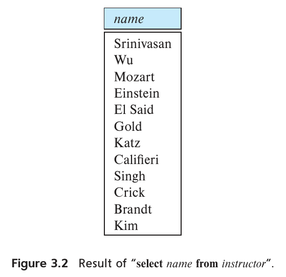
图 3.2 select name from instructor 的结果。
图中字段：name：姓名。
再考虑查询：“找出所有教师所属系的名称。”可写为：
select dept_name
from instructor;
一个系可能有多位教师，因此一个系名可能在 instructor 中出现多次。上述查询结果包含这些系名，如图3.3所示。
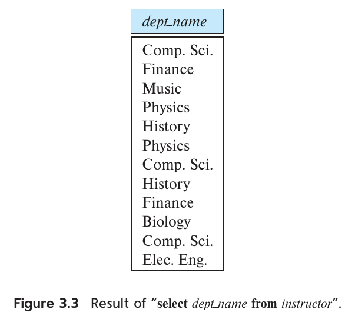
图 3.3 select dept_name from instructor 的结果。
图中字段：dept_name：系名。
在关系模型的正式数学定义中，关系是集合，不会包含重复元组。实际消除重复需要时间，因此 SQL 允许数据库关系和 SQL 表达式结果中存在重复。1 上述查询会针对 instructor 中的每个元组，输出一次其系名。
如果需要强制消除重复，在 select 后加入 distinct。上面的查询可以改写为：
select distinct dept_name
from instructor;
结果中每个系名最多出现一次。
SQL 允许用 all 显式指定保留重复：
select all dept_name
from instructor;
保留重复是默认行为，因此本书示例通常不写 all。需要消除结果重复时，我们会使用 distinct。
select 也可以包含算术表达式，用 +、−、*、/ 对常量或元组属性运算。例如：
select ID, name, dept_name, salary * 1.1
from instructor;
结果与 instructor 相同，但 salary 乘以1.1，展示每位教师加薪10%后的数值。注意，查询不会修改 instructor 关系。
SQL 还提供各种日期类型等特殊类型，并允许对这些类型使用若干算术函数。4.5.1节将进一步介绍。
where 从 from 的结果关系中只保留满足指定谓词的行。例如：“找出计算机科学系中工资超过70,000美元的所有教师的姓名。”SQL 写法为：
select name
from instructor
where dept_name = 'Comp. Sci.' and salary > 70000;
如果 instructor 如图2.1所示，查询结果如图3.4所示。
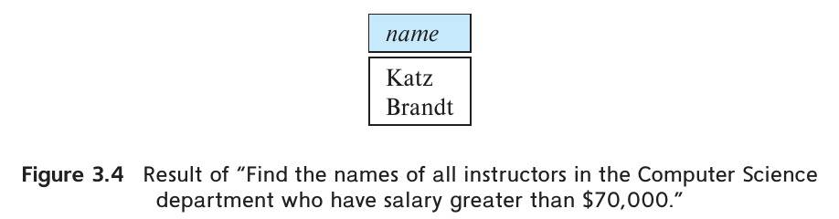
图 3.4 计算机科学系工资超过 70000 美元的教师姓名。
图中字段：name：姓名。
where 中可以使用逻辑连接词 and、or 和 not，其操作数可以是使用 <、<=、>、>=、=、<> 的比较表达式。SQL 允许比较字符串、算术表达式，以及日期等特殊类型。
本章后面还会介绍 where 谓词的其他功能。
3.3.2 多关系查询
前面的查询只涉及一个关系。查询经常需要访问多个关系的信息，现在介绍其写法。
例如，要“检索所有教师的姓名、所在系名，以及所在系的楼宇名称”。
查看 instructor 模式可知，系名来自 dept_name，楼宇名称则在 department 的 building 属性中。因此，必须把每个 instructor 元组，与 department 中 dept_name 相同的元组匹配。SQL 中，在 from 列出需要访问的关系，在 where 指定匹配条件：
select name, instructor.dept_name, building
from instructor, department
where instructor.dept_name = department.dept_name;
如果两个输入关系分别如图2.1和图2.5所示，查询结果就是图3.5。
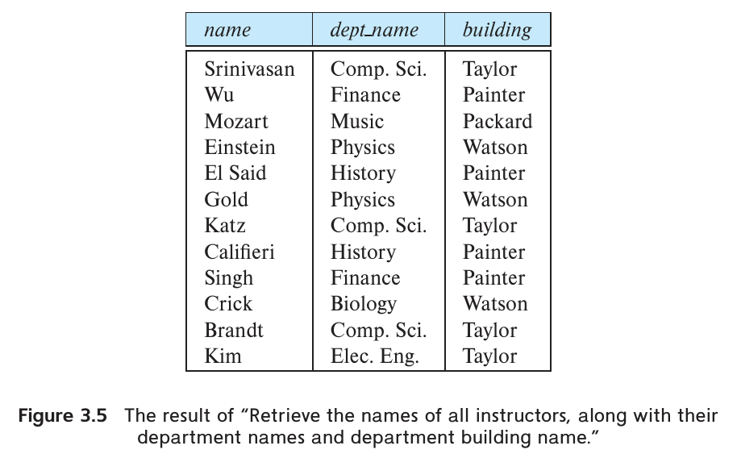
图 3.5 教师姓名、系名及所在楼宇。
图中字段：name：姓名；dept_name：系名；building：楼宇。
dept_name 同时出现在 instructor 和 department 中，需要用关系名前缀明确所指，即 instructor.dept_name 与 department.dept_name。name 和 building 各自只出现在一个关系中，所以无须加前缀。
这一命名规则要求 from 中的关系名称不同。某些情况下会产生问题，例如需要组合同一关系中两个不同元组的信息。3.4.1节将介绍如何用重命名解决。
下面考虑涉及多个关系的 SQL 查询的一般情况。查询可以包含三种子句，其作用如下：
select列出查询结果中需要的属性。from列出计算查询时需要访问的关系。where是涉及from中关系属性的谓词。
典型查询形式为：
select A1, A2, …, An
from r1, r2, …, rm
where P;
Aᵢ 表示属性，rᵢ 表示关系，P 是谓词。省略 where 时，P 为真。
虽然书写顺序必须是 select、from、where，理解查询操作时，按先 from、再 where、最后 select 的顺序最容易。2
from 本身定义了所列关系的笛卡尔积。它可以用关系代数形式化定义，也可以理解为以下迭代过程，用来生成 from 的结果元组：
for each tuple t1 in relation r1
for each tuple t2 in relation r2
…
for each tuple tm in relation rm
Concatenate t1, t2, …, tm into a single tuple t
Add t into the result relation
上述伪代码逐层遍历每个关系中的元组，把 t₁、t₂、…、tₘ 连接为一个元组 t，再加入结果关系。
结果关系包含 from 所列全部关系的全部属性。同一个属性名可能同时出现在 rᵢ 和 rⱼ 中，因此需要加上来源关系名作为前缀。
例如，instructor 与 teaches 笛卡尔积的模式为：
(instructor.ID, instructor.name, instructor.dept_name, instructor.salary,
teaches.ID, teaches.course_id, teaches.sec_id, teaches.semester, teaches.year)
这样可以区分 instructor.ID 与 teaches.ID。只出现在一个模式中的属性，通常省略关系名前缀，不会产生歧义。可简写为：
(instructor.ID, name, dept_name, salary,
teaches.ID, course_id, sec_id, semester, year)
图3.6展示图2.1的 instructor 与图2.7的 teaches 的笛卡尔积，只列出了全部结果中的一部分。
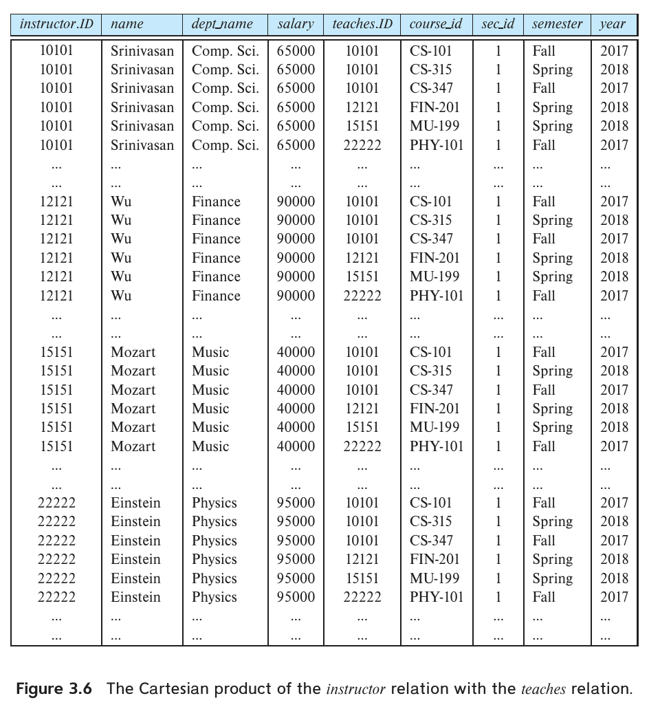
图 3.6 instructor 与 teaches 的笛卡儿积。
图中字段：ID：教师号；name：姓名；dept_name：系名；salary：工资；course_id：课程号；sec_id：教学班号；semester：学期；year：年份；省略号表示未展示的元组。
笛卡尔积会组合两个关系中彼此无关的元组。每个教师元组与全部授课元组组合，包括其他教师的授课记录。结果可能非常大，直接生成这样的笛卡尔积通常没有意义。
where 谓词用于限制笛卡尔积产生的组合，只保留对答案有意义的组合。在涉及 instructor 和 teaches 的查询中，通常希望某个教师元组只与同一教师的授课记录匹配，即二者 ID 相同。下面的查询保证这一条件，并输出匹配元组的教师姓名和课程编号：
select name, course_id
from instructor, teaches
where instructor.ID = teaches.ID;
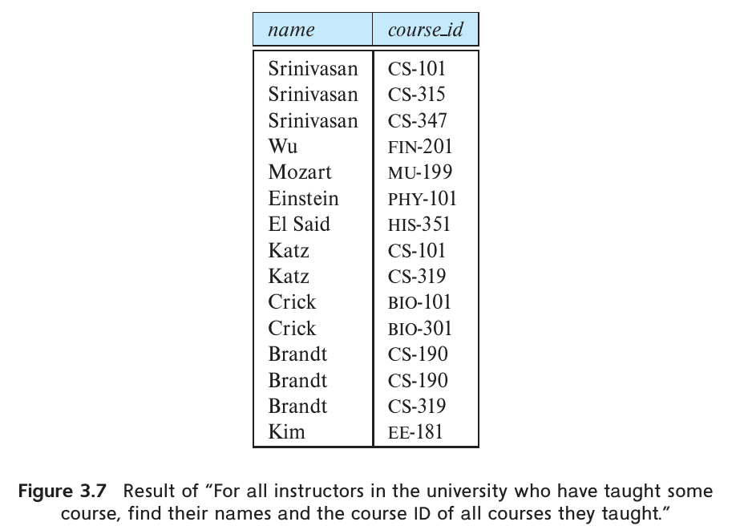
图 3.7 授过课的教师姓名及其所授课程号。
图中字段：name：姓名；course_id：课程号。
查询只输出教过课程的教师，没有教过课的教师不会出现。如果希望保留这些元组，可以使用4.1.3节介绍的外连接运算。
如果两个输入关系分别如图2.1和图2.7所示，查询结果就是图3.7。没有教课的 Gold、Califieri 和 Singh 未出现在结果中。
如果只需要计算机科学系教师的姓名与课程编号，可以在 where 中增加一个谓词：
select name, course_id
from instructor, teaches
where instructor.ID = teaches.ID and instructor.dept_name = 'Comp. Sci.';
dept_name 仅出现在 instructor 中，因此也可以省略它的关系名前缀，直接写 dept_name。
一般来说，SQL 查询的含义可以按以下步骤理解：
- 生成
from中各关系的笛卡尔积。 - 对第一步的结果应用
where谓词。 - 对第二步保留的每个元组，输出
select指定的属性或表达式结果。
这些步骤帮助确定查询应产生什么结果。实际 SQL 实现会优化计算，尽可能只生成满足 where 条件的组合，不会照此机械执行。第15章和第16章介绍这些实现技术。
编写查询时要包含合适的 where 条件。省略前面查询的条件会输出笛卡尔积，可能是一个巨大的关系。对于图2.1和图2.7的示例，笛卡儿积有12 × 13 = 156个元组，已多到无法在书中全部展示。再考虑更接近现实的200位教师，每人教3门课，teaches 就有600个元组，上述迭代会生成200 × 600 = 120,000个结果元组。
译注： 原书此处使用 13 个授课元组计算 156；本版图 2.7 实际列出 15 个元组，按图中数据计算应为 12 × 15 = 180。
3.4 其他基本运算
SQL 还支持若干其他基本运算。
3.4.1 重命名运算
再看前面使用过的查询：
select name, course_id
from instructor, teaches
where instructor.ID = teaches.ID;
结果关系的属性为 name, course_id，它们的名称来自 from 中各关系的属性名。
但并非总能这样确定名称。首先，from 中两个关系可能有同名属性，导致结果属性名重复；其次，select 中使用算术表达式时，结果属性没有名称；最后，即使能从基础关系取得名称，也可能希望修改结果中的属性名。因此，SQL 提供重命名结果属性的 as 子句，形式为：
old-name as new-name
as 可以出现在 select 和 from 中。3
例如，要把结果属性 name 改名为 instructor_name，可改写为：
select name as instructor_name, course_id
from instructor, teaches
where instructor.ID = teaches.ID;
as 对关系重命名也很有用。一个用途是把较长关系名替换为简称，方便查询其他位置使用。例如，查询“找出大学中所有教过课程的教师姓名及其所教全部课程的编号”可以写为：
select T.name, S.course_id
from instructor as T, teaches as S
where T.ID = S.ID;
另一个用途是比较同一关系中的不同元组。这需要关系与自身做笛卡尔积，如果没有重命名，就无法区分两次引用。假设要“找出工资高于 生物系至少一位教师的所有教师姓名”，可以写为：
select distinct T.name
from instructor as T, instructor as S
where T.salary > S.salary and S.dept_name = 'Biology';
这里不能使用 instructor.salary，因为无法确定引用的是哪一个 instructor。
可以把 T、S 理解为 instructor 的两个副本；更准确地说，它们声明为关系的别名，也就是另外的名称。SQL 标准把 T、S 这类用于重命名关系的标识符称为相关名，通常也称为表别名、相关变量或元组变量。
前面的查询用自然语言更直观地表达，就是“找出工资高于 生物系最低薪教师的所有教师姓名”。原先的表述更贴近所写 SQL，后一种表述更容易理解，也能直接写成 SQL，3.8.2节将介绍。
注 3.1 SQL 与多重集关系代数：第一部分
关系代数运算与 SQL 运算密切相关，一个重要区别是 SQL 允许重复。SQL 标准规定查询输出中每个元组出现多少个副本，这又取决于输入关系中元组副本的数量。
为了刻画这一行为，关系代数有一个作用于多重集的版本，称为多重集关系代数。多重集允许重复，其基本运算定义如下：
- 如果 r₁ 中元组 t₁ 有 c₁ 个副本，且 t₁ 满足选择条件 θ，那么 σθ(r₁) 中也有 c₁ 个 t₁ 副本。
- 对 r₁ 中 t₁ 的每个副本，ΠA(r₁) 中都有一个 ΠA(t₁) 的副本，其中 ΠA(t₁) 表示单个元组的投影。
- 如果 r₁ 中 t₁ 有 c₁ 个副本，r₂ 中 t₂ 有 c₂ 个副本，那么 r₁ × r₂ 中元组 t₁.t₂ 有 c₁ × c₂ 个副本。
例如，模式为 (A, B) 的 r₁ 和模式为 (C) 的 r₂ 分别是多重集 r₁ = {(1, a), (2, a)}、r₂ = {(2), (3), (3)}。那么 ΠB(r₁) 为 {(a), (a)}，而 ΠB(r₁) × r₂ 为：
{(a, 2), (a, 2), (a, 3), (a, 3), (a, 3), (a, 3)}
考虑基本 SQL 查询：
select A1, A2, …, An
from r1, r2, …, rm
where P
Aᵢ 为属性，rᵢ 为关系，P 为谓词。省略 where 时 P 为真。该查询等价于多重集关系代数表达式：
ΠA₁, A₂, …, Aₙ(σP(r₁ × r₂ × ⋯ × rₘ))
关系代数的选择运算对应 SQL 的 where 子句，SQL 的 select 则承担其他作用。这种同名异义是历史遗留问题。原书第97页注3.2将讨论更复杂 SQL 查询的表示。
用关系代数表示 SQL，有助于形式化定义 SQL 程序的含义。数据库系统通常还会把 SQL 查询转换为基于关系代数的底层表示，再利用它进行查询优化和执行。
3.4.2 字符串运算
SQL 用单引号包围字符串，例如 'Computer'。字符串内部的单引号写为两个连续单引号，例如 It's right 写为 'It''s right'。
SQL 标准规定字符串相等比较区分大小写，因此 'comp. sci.' = 'Comp. Sci.' 为假。但 MySQL、SQL Server 等某些数据库匹配字符串时默认不区分大小写，此表达式在这些系统上为真。可以在数据库层面或具体属性层面改变这一默认行为。
SQL 还支持多种字符串函数，例如用 || 连接字符串、提取子串、计算长度、用 upper(s) 转为大写、用 lower(s) 转为小写，以及用 trim(s) 去掉末尾空格等，其中 s 为字符串。不同数据库支持的具体函数有所不同，应查阅所用系统手册。
like 运算符支持字符串模式匹配，模式中使用两种特殊字符：
- 百分号
%：匹配任意子串。 - 下划线
_：匹配任意一个字符。
模式区分大小写，4 大写字母不能匹配小写字母，反之亦然。例如：
'Intro%'匹配所有以 Intro 开头的字符串。'%Comp%'匹配所有含 Comp 子串的字符串，例如'Intro. to Computer Science'和'Computational Biology'。'___'匹配恰好3个字符的字符串。'___%'匹配至少3个字符的字符串。
SQL 用 like 比较运算符表达模式。例如，“找出楼宇名称包含 Watson 子串的所有系名”可写为：
select dept_name
from department
where building like '%Watson%';
如果需要在模式中包含 %、_ 这些特殊字符本身，可以指定转义字符。转义字符紧接在特殊字符之前，表示将后者作为普通字符处理。用 escape 为一次 like 比较指定转义字符。例如，采用反斜杠 \ 时：
like 'ab\%cd%' escape '\'匹配所有以ab%cd开头的字符串。like 'ab\\cd%' escape '\'匹配所有以ab\cd开头的字符串。
not like 用于查找不匹配的值。有些实现还提供不区分大小写的 like 变体。
PostgreSQL 等某些 SQL 实现提供 similar to，其模式匹配能力比 like 更强，语法类似 Unix 正则表达式。
3.4.3 select 子句中的属性指定
星号 * 在 select 中表示“所有属性”。例如：
select instructor.*
from instructor, teaches
where instructor.ID = teaches.ID;
instructor.* 表示选择 instructor 的全部属性；select * 则表示选择 from 结果关系的全部属性。
3.4.4 元组的显示顺序
SQL 允许用户控制元组显示顺序，order by 使查询结果按指定次序排列。例如，按字母顺序列出 物理系所有教师姓名：
select name
from instructor
where dept_name = 'Physics'
order by name;
order by 默认升序排列。可以用 desc 指定降序，用 asc 指定升序，还可以按多个属性排序。假设希望按工资降序列出全部教师，同薪教师再按姓名升序排列，可写为：
select *
from instructor
order by salary desc, name asc;
3.4.5 where 子句中的谓词
SQL 的 between 比较运算符，简化了同时规定某值不小于下限、不大于上限的条件。例如，找出工资在90,000至100,000美元之间的教师姓名：
select name
from instructor
where salary between 90000 and 100000;
它等价于：
select name
from instructor
where salary <= 100000 and salary >= 90000;
类似地，可以使用 not between。
SQL 允许用 (v₁, v₂, …, vₙ) 表示包含这些值的 n 元组，称为行构造器。比较运算符可以作用于元组，次序按字典序定义。例如，当 a₁ ≤ b₁ 且 a₂ ≤ b₂ 时，(a₁, a₂) ≤ (b₁, b₂) 为真；两个元组在所有属性都相等时相等。因此，下面的查询：
译注： 前述逐分量条件是字典序比较为真的充分条件，并非完整判定规则。在值均非空时，(a₁, a₂) ≤ (b₁, b₂) 的完整条件为 a₁ < b₁，或 a₁ = b₁ 且 a₂ ≤ b₂。
select name, course_id
from instructor, teaches
where instructor.ID = teaches.ID and dept_name = 'Biology';
可以改写为：5
select name, course_id
from instructor, teaches
where (instructor.ID, dept_name) = (teaches.ID, 'Biology');
3.5 集合运算
SQL 的 union、intersect 和 except 作用于关系，分别对应数学中的集合并 ∪、交 ∩ 和差 −。下面围绕两个集合构造这些运算的查询。
2017年秋季学期开设的全部课程：
select course_id
from section
where semester = 'Fall' and year = 2017;
2018年春季学期开设的全部课程：
select course_id
from section
where semester = 'Spring' and year = 2018;
下文将这两个查询的结果分别称为 c₁、c₂。以图2.6的 section 为输入，结果如图3.8和图3.9所示。c₂ 中 CS-319 出现两次，因为2018年春季开设了两个教学班。
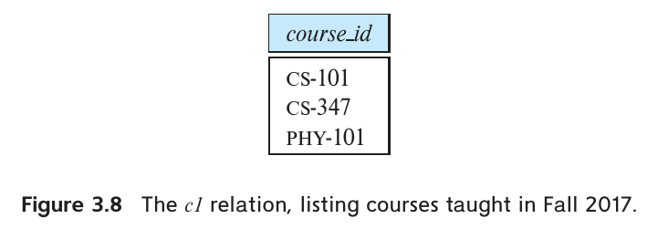
图 3.8 关系 c1：2017 年秋季开设的课程。
图中字段：course_id：课程号。
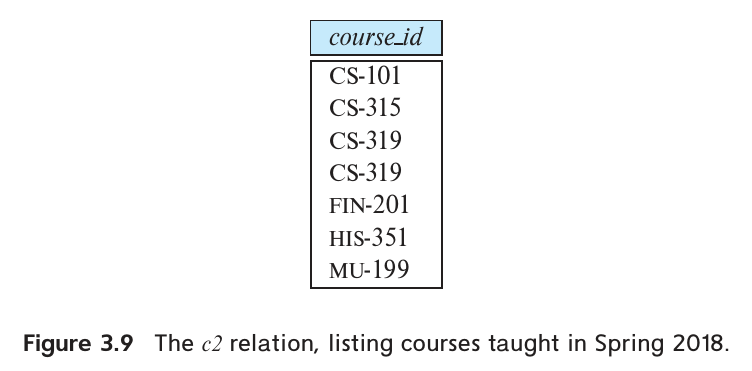
图 3.9 关系 c2：2018 年春季开设的课程。
图中字段：course_id：课程号。
3.5.1 union 运算
要查找2017年秋季、2018年春季或两个学期都开设的全部课程，可写为下列查询。每个 select-from-where 表达式外的括号可以省略，但有助于阅读；有些数据库不允许这些括号，使用时可去掉。
(select course_id
from section
where semester = 'Fall' and year = 2017)
union
(select course_id
from section
where semester = 'Spring' and year = 2018);
union 自动消除重复，普通 select 则保留重复。图2.6中，CS-319 在2018年春季开设两个教学班，CS-101 在两个学期各开设一个，但结果中它们都只出现一次，如图3.10所示。
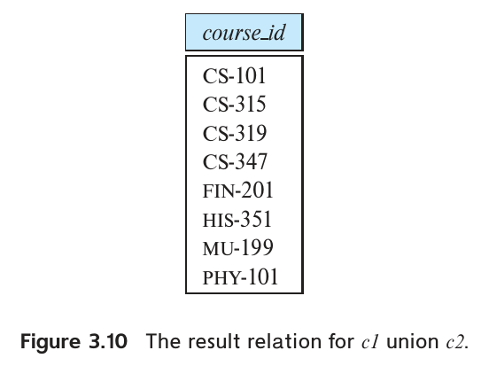
图 3.10 c1 union c2 的结果。
图中字段：course_id：课程号。
要保留全部重复，使用 union all：
(select course_id
from section
where semester = 'Fall' and year = 2017)
union all
(select course_id
from section
where semester = 'Spring' and year = 2018);
结果中某元组的副本数，等于它在 c₁ 和 c₂ 中的副本数之和。因此，CS-319 与 CS-101 各出现两次。再如，若 ECE-101 在2017年秋季开设4个教学班、2018年春季开设2个，结果就包含6个 ECE-101 元组。
3.5.2 intersect 运算
要查找2017年秋季和2018年春季都开设的课程，可写为：
(select course_id
from section
where semester = 'Fall' and year = 2017)
intersect
(select course_id
from section
where semester = 'Spring' and year = 2018);
结果如图3.11所示，只包含一个 CS-101 元组。intersect 自动消除重复。6 例如，即使 ECE-101 在两个学期分别开设4个、2个教学班，结果中也只出现一次。
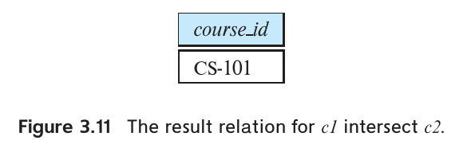
图 3.11 c1 intersect c2 的结果。
图中字段：course_id：课程号。
要保留重复，使用 intersect all：
(select course_id
from section
where semester = 'Fall' and year = 2017)
intersect all
(select course_id
from section
where semester = 'Spring' and year = 2018);
结果副本数等于该元组在 c₁、c₂ 中副本数的较小值。例如，ECE-101 两个学期分别有4个、2个教学班，则结果包含2个 ECE-101 元组。
3.5.3 except 运算
要查找2017年秋季开设、但2018年春季未开设的课程，可写为：
(select course_id
from section
where semester = 'Fall' and year = 2017)
except
(select course_id
from section
where semester = 'Spring' and year = 2018);
结果如图3.12所示，相当于从图3.8的 c₁ 中去掉 CS-101。except7 输出存在于第一个输入、但不存在于第二个输入中的全部元组，即集合差。运算先消除输入重复，再计算差集。假设 ECE-101 两个学期分别有4个、2个教学班，结果中就没有 ECE-101。
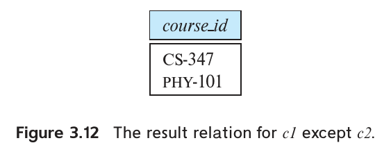
图 3.12 c1 except c2 的结果。
图中字段：course_id：课程号。
要保留重复，使用 except all：
(select course_id
from section
where semester = 'Fall' and year = 2017)
except all
(select course_id
from section
where semester = 'Spring' and year = 2018);
结果副本数等于 c₁ 中的副本数减去 c₂ 中的副本数，前提是差为正；否则没有该元组。ECE-101 在2017年秋季有4个教学班、2018年春季有2个，结果就出现2次。如果秋季只有2个或更少，春季有2个，结果就不包含 ECE-101。
3.6 空值
空值给关系运算带来特殊问题，包括算术运算、比较和集合运算。
算术表达式（例如包含 +、−、*、/）只要任一输入为空，结果就为空。例如，查询表达式 r.A + 5 中，某个元组的 r.A 为空，该元组的表达式结果也必须为空。
涉及空值的比较更麻烦。例如 1 < null：无法判定为真，因为不知道空值代表什么；也不能判定为假，否则 not (1 < null) 会为真，同样没有根据。因此，除本节后面介绍的 is null、is not null 外，SQL 把涉及空值的比较结果视为 unknown（未知），形成真、假之外的第三个逻辑值。
where 谓词可能对比较结果使用 and、or、not，所以必须扩展这些布尔运算的定义，以处理 unknown。
and：true and unknown为 unknown；false and unknown为 false；unknown and unknown为 unknown。or：true or unknown为 true；false or unknown为 unknown；unknown or unknown为 unknown。not：not unknown为 unknown。
可以验证，如果 r.A 为空，1 < r.A 与 not (1 < r.A) 都得到 unknown。
某个元组的 where 谓词为 false 或 unknown 时，该元组都不会加入结果。
SQL 在谓词中用特殊关键字 null 检查空值。例如，找出 instructor 中工资为空的所有教师：
select name
from instructor
where salary is null;
值非空时，is not null 谓词为真。
is unknown、is not unknown 可以检查比较结果是否为 unknown，以区别 true 和 false。8 例如：
select name
from instructor
where salary > 10000 is unknown;
使用 select distinct 时，需要消除重复元组。此时比较两个元组的对应属性，只要二者都非空且相等，或者二者都为空，就视为相同。因此，{('A',null), ('A',null)} 中的两个副本被视为相同，即使有属性为空，distinct 仍只保留一个副本。这里的规则不同于谓词比较：谓词 null=null 的结果是 unknown。
union、交运算和 except 也采用同样的方法：所有属性对应相同的元组视为相同，其中允许某些对应值都为空。
3.7 聚集函数
聚集函数（aggregate function）以一组值（集合或多重集）为输入，返回单个值。SQL 提供五种标准的内置聚集函数：9
- 平均值：
avg - 最小值：
min - 最大值：
max - 总和：
sum - 计数：
count
sum 和 avg 的输入必须是一组数值，其他运算也能处理字符串等非数值类型的值。
3.7.1 基本聚集
考虑查询“找出计算机科学系教师的平均工资”。可写为：
select avg (salary)
from instructor
where dept_name = 'Comp. Sci.';
结果关系只有一个属性和一个元组，其中的数值就是计算机科学系教师的平均工资。数据库系统可能直接用表达式文本给聚集生成的结果属性命名，这样的名称可能不够清晰。可以用 as 子句赋予有意义的名称：
select avg (salary) as avg_salary
from instructor
where dept_name = 'Comp. Sci.';
图 2.1 的 instructor 关系中，计算机科学系教师的工资分别为 75000、65000 和 92000 美元。平均工资为 232000 / 3 = 77333.33 美元。
计算平均值时，保留重复值十分重要。假设计算机科学系又增加一名教师，其工资恰好也是 75000 美元。如果消除重复值，就会得到错误答案（232000 / 4 = 58000 美元），正确答案应为 76750 美元。
译注： 这里保留原书的 232000 / 4 算式，它表示仅从总和中去掉重复工资、仍按 4 人相除的错误算法。若实际执行 avg(distinct salary)，参与平均的不同值只有 3 个，结果为 232000 / 3，仍不等于四位教师的平均工资 76750。
有时必须先消除重复值，再计算聚集函数。这时在聚集表达式中使用关键字 distinct。例如，“找出在 2018 年春季学期授课的教师总人数”。无论教师教授多少个教学班，每位教师都只计一次。所需信息在 teaches 关系中，查询如下：
select count (distinct ID)
from teaches
where semester = 'Spring' and year = 2018;
由于 ID 前有关键字 distinct，即使一位教师教授多门课程，在结果中也只计一次。
经常用聚集函数 count 统计关系中的元组数，SQL 中的写法是 count (*)。例如，统计 course 关系中的元组数：
select count (*)
from course;
SQL 不允许对 count (*) 使用 distinct。max 和 min 可以使用 distinct，不过结果不会改变。也可以用关键字 all 替代 distinct，明确要求保留重复值；但 all 是默认选项，无须显式指定。
3.7.2 分组聚集
有时需要对若干组元组分别应用聚集函数。在 SQL 中，这由 group by 子句指定。该子句给出的一个或多个属性用于分组：这些属性上的值全部相同的元组归入同一组。
例如，“找出每个系的平均工资”，可写为：
select dept_name, avg (salary) as avg_salary
from instructor
group by dept_name;
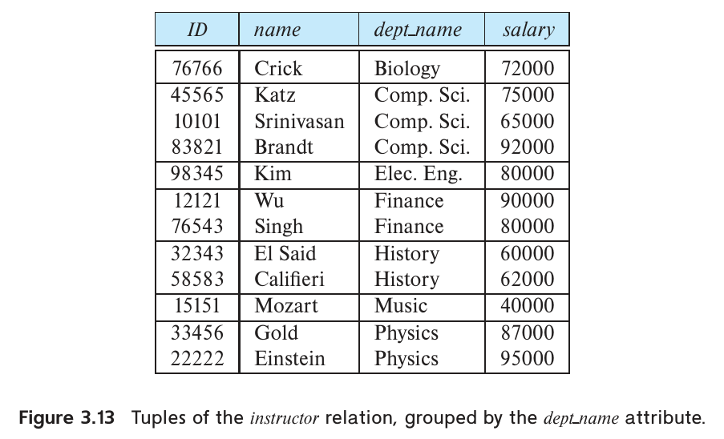
图 3.13 按 dept_name 分组的 instructor 元组。
图中字段：ID：教师号；name：姓名；dept_name：系名；salary：工资。
图 3.13 展示了按 dept_name 属性分组后的 instructor 元组，这是计算查询结果的第一步。对每组计算指定的聚集函数，就得到图 3.14 中的查询结果。
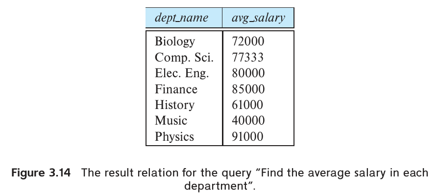
图 3.14 各系平均工资。
图中字段：dept_name：系名；avg_salary：平均工资。
再看查询“找出所有教师的平均工资”：
select avg (salary)
from instructor;
这个查询省略了 group by 子句，整个关系被视为一个组。
另一个对元组分组后聚集的例子是：“找出每个系在 2018 年春季学期授课的教师人数。”teaches 关系保存了教师在哪个学期教授哪个教学班的信息。为了得到每位教师的系名，还要与 instructor 关系连接。查询如下：
select dept_name, count (distinct ID) as instr_count
from instructor, teaches
where instructor.ID = teaches.ID and
semester = 'Spring' and year = 2018
group by dept_name;
结果见图 3.15。
译注： 原书代码中 ID 同时存在于 instructor 和 teaches，未限定的 count(distinct ID) 会产生列名歧义。执行时可写 count(distinct instructor.ID)。
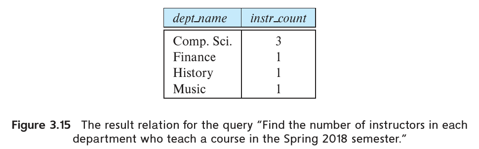
图 3.15 各系在 2018 年春季授课的教师人数。
图中字段：dept_name：系名；instr_count：教师人数。
SQL 查询使用分组时，需要确保 select 中所有未参与聚集的属性都出现在 group by 子句中。换言之，不在 group by 中的属性，只能作为聚集函数的参数出现在 select 中，否则查询会被判为错误。例如，下面的查询有误：ID 没有出现在 group by 中，却未经聚集直接出现在 select 中。
/* erroneous query */
select dept_name, ID, avg (salary)
from instructor
group by dept_name;
同一组（由 dept_name 确定）中每位教师的 ID 可以不同，每组却只输出一个元组，因而无法唯一确定应该输出哪个 ID。SQL 不允许这种情况。
这个查询还展示了 SQL 注释：把文本放在 /* */ 之间。同样的注释也可以写作 -- erroneous query。这里的注释意为“错误查询”。
3.7.3 having 子句
有时需要对组设置条件。例如，我们可能只关心教师平均工资超过 42000 美元的系。这个条件作用于 group by 构造出的每个组，无法用于判断单个元组。SQL 用 having 子句表达这样的查询。分组完成后才应用 having 中的谓词，因而其中可以使用聚集函数。查询如下：
select dept_name, avg (salary) as avg_salary
from instructor
group by dept_name
having avg (salary) > 42000;
结果见图 3.16。
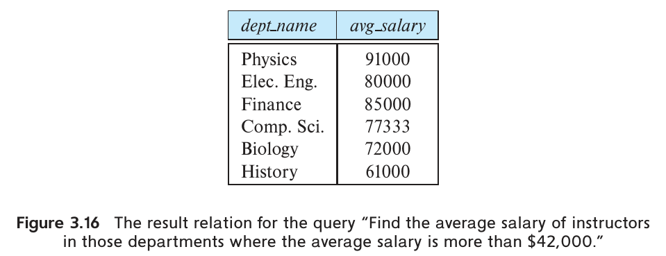
图 3.16 平均工资超过 42000 美元的各系平均工资。
图中字段：dept_name：系名；avg_salary：平均工资。
与 select 子句一样，having 中所有未参与聚集的属性都必须出现在 group by 中，否则查询有误。
包含聚集、group by 或 having 子句的查询，其含义由以下操作顺序定义：
- 与不含聚集的查询一样，先计算
from子句，得到一个关系。 - 如果存在
where子句，就对from的结果关系应用其中的谓词。 - 如果存在
group by子句，就把满足where谓词的元组分组；否则，所有满足where谓词的元组组成一个组。 - 如果存在
having子句，就对每个组应用其中的谓词，删除不满足条件的组。 select子句用剩下的组生成查询结果：计算聚集函数，每组产生一个结果元组。
下面用一个查询说明如何同时使用 having 和 where：“对于 2017 年开设的每个教学班，如果选课学生至少有 2 人，就找出这些学生已修总学分（tot_cred）的平均值。”
select course_id, semester, year, sec_id, avg (tot_cred)
from student, takes
where student.ID = takes.ID and year = 2017
group by course_id, semester, year, sec_id
having count (ID) >= 2;
这个查询所需的全部信息都可以从 takes 和 student 关系获得。虽然查询涉及教学班，但无须与 section 连接。
译注： 这条原书查询中的 ID 同时存在于 student 和 takes。执行时应将 having count(ID) 写成 having count(student.ID)，避免列名歧义。
3.7.4 含空值和布尔值的聚集
空值会使聚集运算的处理变得复杂。例如，假设 instructor 的某些元组中 salary 为空。考虑求工资总额的查询：
select sum (salary)
from instructor;
由于假设有些元组的 salary 为空，参与求和的值中也就含有空值。SQL 标准规定，sum 忽略输入中的空值，整体求和结果不因此变成空值。
一般而言，聚集函数按以下规则处理空值：除 count (*) 外，所有聚集函数都忽略输入中的空值。忽略空值后，输入值的集合可能变成空集。对空集计数的结果定义为 0，其他所有聚集运算对空集都返回空值。空值对某些较复杂的 SQL 结构的影响可能很微妙。
SQL:1999 引入了可取 true、false、unknown 的布尔数据类型。聚集函数 some 和 every 可用于一组布尔值，分别计算这些值的析取（or）与合取（and）。
注 3.2 SQL 与多重集关系代数：第二部分
如原书第 80 页的注 3.1 所述，SQL 的 select、from 和 where 子句可以用多重集关系代数中的选择、投影和笛卡儿积运算表示。
关系代数的并、交、差（∪、∩、−）也可以类似地扩展到多重集关系代数，定义分别对应 3.5 节的 SQL union all、intersect all 和 except all。SQL 的 union、intersect 和 except 则对应集合版本的 ∪、∩ 和 −。
扩展关系代数的聚集运算 γ 允许对关系属性使用聚集函数。（也有人用符号 𝒢 表示聚集运算，本书早期版本即采用这个符号。）运算
dept_nameγaverage(salary)(instructor)
按 dept_name 对 instructor 分组，并计算各组的平均工资，正如 3.7.2 节所示。左下标可以省略，这时整个输入关系构成一个组。因此，γaverage(salary)(instructor) 计算所有教师的平均工资。聚集产生的值没有属性名，可以用重命名运算 ρ 命名，也可以使用下面的简便写法：
dept_nameγaverage(salary) as avg_salary(instructor)
更复杂的 SQL 查询也可以改写成关系代数。例如：
select A1, A2, sum(A3)
from r1, r2, …, rm
where P
group by A1, A2 having count(A4) > 2
等价于：
t₁ ← σₚ(r₁ × r₂ × ⋯ × rₘ)
ΠA₁, A₂, SumA₃(σcountA₄ > 2(A₁, A₂γsum(A₃) as SumA₃, count(A₄) as countA₄(t₁)))
from 子句中的连接表达式可以用关系代数中的等价连接表达式表示，细节留作练习。不过，where 或 select 子句中的子查询无法这样直接改写，因为关系代数中没有与子查询结构等价的运算。为此已有一些扩展关系代数的方案，但超出了本书的讨论范围。
3.8 嵌套子查询
SQL 提供了嵌套子查询的机制。子查询是嵌套在另一个查询中的 select-from-where 表达式。常见用法是在 where 子句中嵌套子查询，以检验集合成员资格、比较集合和确定集合基数。3.8.1 至 3.8.4 节讨论这些用法；3.8.5 节讨论在 from 子句中嵌套子查询；3.8.7 节说明一种称为标量子查询的子查询，它可以出现在任何允许使用返回单个值的表达式的位置。
3.8.1 集合成员资格
SQL 允许检验一个元组是否属于某个关系。连接词 in 检验集合成员资格，其中的集合是 select 子句产生的一组值。not in 检验一个值是否不属于该集合。
再考虑“找出在 2017 年秋季和 2018 年春季都开设的所有课程”。之前通过求两个集合的交集完成查询：2017 年秋季开设的课程集合与 2018 年春季开设的课程集合。另一种思路是，找出 2017 年秋季开设、同时又属于 2018 年春季课程集合的所有课程。结果相同，但这种表述引出了 SQL 的 in 连接词。先找出 2018 年春季开设的全部课程：
(select course_id
from section
where semester = 'Spring' and year = 2018)
然后查找在 2017 年秋季开设、且出现在上述子查询结果集中的课程。把子查询嵌入外层查询的 where 子句即可：
select distinct course_id
from section
where semester = 'Fall' and year = 2017 and
course_id in (select course_id
from section
where semester = 'Spring' and year = 2018);
这里需要 distinct，因为前面使用的 intersect 默认消除重复值。
这个例子说明，同一查询可以有多种 SQL 写法。这种灵活性使用户可以用自己觉得自然的方式思考查询。后面还会看到，SQL 中有相当多功能相互重叠的结构。
not in 的用法与 in 类似。例如，找出在 2017 年秋季开设、但在 2018 年春季没有开设的全部课程。这个查询之前用 except 表达，现在可以写为：
select distinct course_id
from section
where semester = 'Fall' and year = 2017 and
course_id not in (select course_id
from section
where semester = 'Spring' and year = 2018);
in 和 not in 也可以用于显式枚举的集合。下面查询找出姓名既非 Mozart 也非 Einstein 的教师姓名：
select distinct name
from instructor
where name not in ('Mozart', 'Einstein');
前面的例子检验的都是单属性关系中的成员资格。SQL 也能检验任意关系中的成员资格。例如，“找出选修过 ID 为 110011 的教师所教教学班的学生总人数（不重复）”，可写为：
select count (distinct ID)
from takes
where (course_id, sec_id, semester, year) in
(select course_id, sec_id, semester, year
from teaches
where teaches.ID = '10101');
不过，一些 SQL 实现不支持上述行构造语法 (course_id, sec_id, semester, year)。3.8.3 节会给出该查询的其他写法。
译注： 原书此处正文写教师 ID 为 110011，SQL 中写的是 10101；3.8.3 节再次出现同样的不一致。这里分别保留，实际查询对象由 SQL 字面量决定。
3.8.2 集合比较
嵌套子查询可以用于集合比较。考虑“找出工资高于生物系至少一位教师的所有教师姓名”。3.4.1 节给出的写法是：
select distinct T.name
from instructor as T, instructor as S
where T.salary > S.salary and S.dept_name = 'Biology';
SQL 还提供另一种写法。“比其中至少一个大”可以用 > some 表达。借助这个结构，查询可以写得接近自然语言描述：
select name
from instructor
where salary > some (select salary
from instructor
where dept_name = 'Biology');
子查询
(select salary
from instructor
where dept_name = 'Biology')
产生生物系所有教师的工资值集合。如果当前元组的工资高于这个集合中至少一个工资值，外层 select 的 where 子句中的 > some 比较就为真。
SQL 还允许 < some、<= some、>= some、= some 和 <> some。请自行验证：= some 等价于 in，而 <> some 与 not in 不等价。10
稍微修改一下查询，找出工资高于生物系每一位教师的所有教师姓名。> all 表示“大于所有值”，查询可写为：
select name
from instructor
where salary > all (select salary
from instructor
where dept_name = 'Biology');
与 some 一样，SQL 还允许 < all、<= all、>= all、= all 和 <> all。请自行验证：<> all 等价于 not in，而 = all 与 in 不等价。
再看一个集合比较的例子：“找出平均工资最高的系。”先写出求各系平均工资的查询，再把它嵌入一个更大的查询，找出平均工资大于或等于所有系平均工资的系：
select dept_name
from instructor
group by dept_name
having avg (salary) >= all (select avg (salary)
from instructor
group by dept_name);
3.8.3 空关系检验
SQL 可以检验子查询结果中是否包含元组。如果作为参数的子查询非空，exists 返回 true。利用它，“找出在 2017 年秋季和 2018 年春季都开设的全部课程”还可以写成：
select course_id
from section as S
where semester = 'Fall' and year = 2017 and
exists (select *
from section as T
where semester = 'Spring' and year = 2018 and
S.course_id = T.course_id);
这个查询还展示了 SQL 的一个特性：外层查询的相关名（这里的 S）可以用于 where 中的子查询。使用外层查询相关名的子查询称为相关子查询（correlated subquery）。
包含子查询时，相关名遵循作用域规则：子查询只能使用自身定义的相关名，或包含它的任一外层查询中定义的相关名。如果一个相关名在子查询内有局部定义，在外层查询中又有全局定义，则采用局部定义。这与编程语言中常见的变量作用域规则类似。
not exists 可以检验子查询中是否不存在元组，还可以模拟集合包含（即超集）运算：“关系 A 包含关系 B”可写作 not exists (B except A)。（一些早期关系系统提供过 contains 运算，但当前 SQL 标准没有这个运算。）例如，“找出选修过生物系开设的全部课程的所有学生”，可结合 except 写为：
select S.ID, S.name
from student as S
where not exists ((select course_id
from course
where dept_name = 'Biology')
except
(select T.course_id
from takes as T
where S.ID = T.ID));
其中，子查询
(select course_id
from course
where dept_name = 'Biology')
找出生物系开设的全部课程，而子查询
(select T.course_id
from takes as T
where S.ID = T.ID)
找出学生 S.ID 选修的全部课程。外层 select 逐一检查每位学生，检验该生的选课集合是否包含生物系开设的全部课程。
3.8.1 节给出了“找出选修过 ID 为 110011 的教师所教教学班的学生总人数（不重复）”的 SQL 查询。那个写法使用元组构造语法，有些数据库不支持。用 exists 可以改写为：
select count (distinct ID)
from takes
where exists (select course_id, sec_id, semester, year
from teaches
where teaches.ID = '10101'
and takes.course_id = teaches.course_id
and takes.sec_id = teaches.sec_id
and takes.semester = teaches.semester
and takes.year = teaches.year
);
3.8.4 无重复元组检验
SQL 提供了检验子查询结果中是否有重复元组的布尔函数。如果参数子查询不含重复元组，unique 返回 true。11 用它可以查询“找出 2017 年至多开设过一次的所有课程”：
select T.course_id
from course as T
where unique (select R.course_id
from section as R
where T.course_id = R.course_id and
R.year = 2017);
如果某门课程在 2017 年没有开设，子查询返回空集；unique 对空集的求值结果为 true。
不使用 unique 的等价写法如下：
select T.course_id
from course as T
where 1 >= (select count(R.course_id)
from section as R
where T.course_id = R.course_id and
R.year = 2017);
用 not unique 可以检验子查询中是否存在重复元组。例如，“找出 2017 年至少开设过两次的所有课程”：
select T.course_id
from course as T
where not unique (select R.course_id
from section as R
where T.course_id = R.course_id and
R.year = 2017);
形式上，当且仅当关系包含两个不同的元组 t₁ 和 t₂，且 t₁ = t₂ 时，unique 检验失败。如果 t₁ 或 t₂ 的任一字段为空，t₁ = t₂ 的检验就不会为真。因此，即使一个元组有多个副本，只要它至少有一个属性为空，unique 仍有可能为真。
3.8.5 from 子句中的子查询
SQL 允许在 from 子句中使用子查询表达式。依据是：任何 select-from-where 表达式都返回一个关系，因此，在另一个 select-from-where 表达式中，凡是允许出现关系的位置，都可以放入这样的表达式。
考虑“找出教师平均工资超过 42000 美元的各系的平均工资”。3.7 节使用 having 表达了这个查询。现在可以在 from 中使用子查询，写成不含 having 的形式：
select dept_name, avg_salary
from (select dept_name, avg (salary) as avg_salary
from instructor
group by dept_name)
where avg_salary > 42000;
子查询生成的关系包含所有系的名称及其教师平均工资。如本例所示，外层查询可以使用子查询结果的属性。
这里无须使用 having，因为 from 中的子查询已计算出平均工资，原先 having 中的谓词现在放在外层查询的 where 中。
可以用 as 给子查询结果关系命名，并重命名其属性：
select dept_name, avg_salary
from (select dept_name, avg (salary)
from instructor
group by dept_name)
as dept_avg (dept_name, avg_salary)
where avg_salary > 42000;
结果关系名为 dept_avg，属性为 dept_name 和 avg_salary。
大多数 SQL 实现支持在 from 中嵌套子查询，但并非所有实现都支持。一些实现，主要是 MySQL 和 PostgreSQL，要求给 from 中的每个子查询关系命名，即使后面不会引用这个名称。Oracle 允许给子查询结果关系命名（省略关键字 as），但不允许通过这种方式重命名其属性。一个简单的处理办法是在子查询的 select 子句中给属性重命名：将上述子查询的 select 子句替换为
select dept_name, avg(salary) as avg_salary
再将 as dept_avg (dept_name, avg_salary) 替换为 as dept_avg。
译注： 原书给出的替换文本仍含 as，与前文所述 Oracle 的关系别名语法冲突。在 Oracle 中应写 dept_avg，省略 as。
再看一个例子：先求每个系的教师工资总额，再找出各系总额中的最大值。having 无法直接帮助完成这个任务，但在 from 中使用子查询就很容易表达：
select max (tot_salary)
from (select dept_name, sum(salary)
from instructor
group by dept_name) as dept_total (dept_name, tot_salary);
from 中的嵌套子查询不能引用同一 from 子句内其他关系的相关变量。不过，从 SQL:2003 开始，SQL 标准允许在这种子查询前加上关键字 lateral，使它能够访问同一 from 子句中位于其前面的表或子查询的属性。例如，要输出每位教师的姓名、工资及其所在系的平均工资，可以写为：
select name, salary, avg_salary
from instructor I1, lateral (select avg(salary) as avg_salary
from instructor I2
where I2.dept_name = I1.dept_name);
没有 lateral 时，子查询不能访问外层查询的相关变量 I1。只有较新的 SQL 实现支持 lateral 子句。
3.8.6 with 子句
with 子句可以定义一个临时关系，该定义只在包含这个 with 子句的查询中有效。考虑下面找出预算最高的系的查询：
with max_budget (value) as
(select max(budget)
from department)
select budget
from department, max_budget
where department.budget = max_budget.value;
译注： 原书将这个示例描述为“找出预算最高的系”，但 select 列表只有 budget，实际输出的是这些系的预算值。若要输出系名，可将 select budget 改为 select dept_name。
with 定义了临时关系 max_budget，其内容是定义该关系的子查询的结果。这个关系只能用于同一查询中位于其定义之后的部分。12 with 于 SQL:1999 引入，许多数据库系统支持它，但尚非全部。
这个查询也可以用嵌套在 from 或 where 中的子查询表达，但那样可读性较差。with 使查询逻辑更清楚，也允许在同一查询的多处使用这个临时关系。
例如，想找出工资总额高于所有系工资总额平均值的全部系，可以使用 with：
with dept_total (dept_name, value) as
(select dept_name, sum(salary)
from instructor
group by dept_name),
dept_total_avg(value) as
(select avg(value)
from dept_total)
select dept_name
from dept_total, dept_total_avg
where dept_total.value > dept_total_avg.value;
也可以不使用 with 写出等价查询，但会更复杂、更难理解。读者可以把这个改写留作练习。
3.8.7 标量子查询
凡是允许使用返回单个值的表达式的位置，SQL 都允许出现子查询，前提是子查询只返回一个仅含单个属性的元组。这类子查询称为标量子查询（scalar subquery）。例如，可以在 select 中使用子查询。下面列出所有系及各系的教师人数：
select dept_name,
(select count(*)
from instructor
where department.dept_name = instructor.dept_name)
as num_instructors
from department;
这里的子查询使用 count(*) 聚集且没有 group by，保证只返回单个值。它还展示了相关变量的使用，即引用外层查询 from 中关系的属性，例如 department.dept_name。
标量子查询可以出现在 select、where 和 having 中，也可以不使用聚集函数。编译时不一定能判断子查询会不会返回多个元组；如果执行时结果含有多个元组，就会出现运行时错误。
严格来说，即使只包含单个元组，标量子查询的结果类型仍是关系。不过，当表达式所需的是单个值时，SQL 会隐式提取这个关系中唯一元组的唯一属性值，并返回该值。
3.8.8 不含 from 子句的标量表达式
有些查询只需要计算，无须引用任何关系。有些查询的子查询包含 from，但最外层查询无须 from。
例如，想求每位教师平均教授的教学班数，不考虑年份和学期；由多位教师共同教授的教学班，对每位教师各计一次。先统计 teaches 的元组数，得到授课教学班总次数，再统计 instructor 的元组数，得到教师人数，最后做除法即可。可能会写成：
(select count (*) from teaches) / (select count (*) from instructor);
译注： 此处按原书保留标量表达式。把它作为独立查询在支持省略 from 的系统中执行时，还需在最前面加 select。
某些系统允许这种写法，其他系统会因为缺少 from 而报错。13 对于后者，可以创建一个只含一个元组的特殊虚拟关系，例如命名为 dual。这时查询可写为：
select (select count (*) from teaches) / (select count (*) from instructor)
from dual;
Oracle 为这类用途预定义了一个只含一个元组的 dual 关系（该关系只有一个属性，其具体内容与这里的用途无关）。使用其他数据库时，可以自行创建等价关系。
上述查询将一个整数除以另一个整数，在多数数据库中结果仍为整数，会损失精度。如果希望得到浮点数结果，可以先把其中一个子查询的结果乘以 1.0，将其转为浮点数，再做除法。
注 3.3 SQL 与多重集关系代数：第三部分
本章前面介绍的 SQL 集合运算和聚集运算在关系代数中有直接对应的运算，SQL 子查询则没有。多数含子查询的 SQL 查询可以改写为不使用子查询的形式，因而也有等价的关系代数表达式。
改写时可以借助两种扩展关系代数运算：半连接（semijoin），记作 ⋉；反连接（antijoin），记作 ⋉̅（上加横线），有时也用 ▷ 表示。许多数据库实现在内部支持它们。例如，给定关系 r 和 s，r ⋉r.A=s.B s 输出 r 中满足下列条件的所有元组：s 中至少有一个元组，其 s.B 属性值与该元组的 r.A 属性值相同。r ⋉̅r.A=s.B s 则输出 r 中没有这种匹配元组的所有元组。这些运算可用于改写许多包含 exists 和 not exists 的子查询。
半连接和反连接都可以用其他关系代数运算表达，因此没有增加表达能力。不过，它们能够得到高效实现，在实践中很有用。
一般来说，改写含子查询的 SQL 并不简单。因此，数据库系统实现会扩展关系代数，允许 σ 和 Π 运算在谓词和投影列表中调用子查询。
3.9 数据库修改
前面只讨论了如何从数据库中提取信息。下面介绍如何用 SQL 添加、删除和修改信息。
3.9.1 删除
删除请求的表达方式与查询相近。删除只能以整个元组为单位，不能只删除某些属性上的值。SQL 的删除语句为：
delete from r
where P;
其中 P 表示谓词，r 表示关系。delete 先找出 r 中所有使 P(t) 为真的元组 t，再将它们从 r 中删除。可以省略 where，这时 r 中的全部元组都会被删除。
一条 delete 命令只作用于一个关系。若要删除多个关系中的元组，必须对每个关系各使用一条 delete。where 中的谓词可以与 select 的 where 一样复杂，也可以完全不写 where。例如：
delete from instructor;
这会删除 instructor 中的全部元组。关系本身仍然存在，但变成空关系。
下面是一些 SQL 删除请求：
删除 instructor 中金融系教师的全部元组：
delete from instructor
where dept_name = 'Finance';
删除工资在 13000 至 15000 美元之间的所有教师：
delete from instructor
where salary between 13000 and 15000;
删除 instructor 中所属系位于 Watson 楼的全部教师元组：
delete from instructor
where dept_name in (select dept_name
from department
where building = 'Watson');
这个请求先找出位于 Watson 楼的所有系，再删除属于这些系的全部教师元组。
虽然一次只能删除一个关系中的元组，但 delete 的 where 内嵌套的 select-from-where 可以引用任意多个关系。嵌套的 select 还可以引用正在删除元组的关系本身。例如，要删除工资低于全校平均工资的所有教师记录，可以写为：
delete from instructor
where salary < (select avg (salary)
from instructor);
这条 delete 先检查 instructor 的每个元组，判断工资是否低于全校教师平均工资，然后删除所有满足条件的元组。必须先完成全部检验，再进行任何删除。如果一些元组被删除时，其他元组尚未检验，平均工资就可能改变，最终删除结果便会取决于元组的处理顺序！
3.9.2 插入
向关系中插入数据时，可以直接指定待插入元组，也可以编写一个查询，将其结果中的元组插入。插入元组的各属性值必须属于对应属性的域，属性个数也必须正确。
最简单的 insert 请求只插入一个元组。假设要添加一门计算机科学系的课程，课程号为 CS-437，课程名为 Database Systems，学分为 4，可写为：
insert into course
values ('CS-437', 'Database Systems', 'Comp. Sci.', 4);
这里的值按照关系模式中的属性顺序给出。为了方便不记得属性顺序的用户，SQL 允许在 insert 中显式列出属性。例如，下面两条语句与上一条功能相同：
insert into course (course_id, title, dept_name, credits)
values ('CS-437', 'Database Systems', 'Comp. Sci.', 4);
insert into course (title, course_id, credits, dept_name)
values ('Database Systems', 'CS-437', 4, 'Comp. Sci.');
更一般地，可以根据查询结果插入元组。假设希望把音乐系每位已修学分超过 144 的学生都添加为音乐系教师，工资为 18000 美元，可写为：
insert into instructor
select ID, name, dept_name, 18000
from student
where dept_name = 'Music' and tot_cred > 144;
这里用 select 指定一组元组。SQL 先计算 select 得到元组集合，再将其插入 instructor。每个元组包含 ID、姓名、系名（Music）和 18000 美元的工资。
系统必须先完整计算 select，再进行任何插入。假如计算 select 的过程中就开始插入，那么在 student 没有主键约束时，下面的请求可能插入无限多个元组：
insert into student
select *
from student;
没有主键约束时，它会再次插入 student 的第一个元组，生成第二份副本。第二份副本现在也属于 student，select 可能再次找到它并插入第三份，随后找到第三份并插入第四份，如此无限继续。先完整计算 select 再插入可以避免这个问题。因此，若关系没有主键约束，上述语句只会将 student 的每个元组复制一次。
此前的 insert 例子都给出了待插入元组每个属性的值。也可以只为部分属性提供值，其余属性赋予用 null 表示的空值。例如：
insert into student
values ('3003', 'Green', 'Finance', null);
插入的元组表明，ID 为 3003 的学生属于金融系，但其 tot_cred 未知。
大多数关系数据库产品提供专门的“批量装载器（bulk loader）”，用于向关系中插入大量元组。这些工具可以读取具有规定格式的文本文件，执行速度可能远快于完成同样任务的一系列 insert 语句。
3.9.3 更新
有时只想修改元组的部分属性值，可以使用 update。与 insert 和 delete 一样，可以通过查询选择待更新的元组。
假设进行年度工资调整，所有教师的工资增加 5%，可写为：
update instructor
set salary = salary * 1.05;
这条更新对 instructor 的每个元组应用一次。
如果只给工资低于 70000 美元的教师加薪，可以写为：
update instructor
set salary = salary * 1.05
where salary < 70000;
一般而言，select 的 where 中合法的结构（包括嵌套 select）也都可以用于 update 的 where。与插入和删除一样，更新语句中的嵌套 select 可以引用正在更新的关系。SQL 先检查关系中的全部元组，确定哪些需要更新，然后才执行更新。例如，“给工资低于平均值的教师加薪 5%”可写为：
update instructor
set salary = salary * 1.05
where salary < (select avg (salary)
from instructor);
现在假设工资超过 100000 美元的教师加薪 3%，其余教师加薪 5%。可以写两条更新语句：
update instructor
set salary = salary * 1.03
where salary > 100000;
update instructor
set salary = salary * 1.05
where salary <= 100000;
这两条语句的顺序很重要。如果颠倒顺序，工资略低于 100000 美元的教师会获得超过 8% 的涨幅。
SQL 的 case 结构可以把这两种更新合并为一条 update，避免更新顺序带来的问题：
update instructor
set salary = case
when salary <= 100000 then salary * 1.05
else salary * 1.03
end
case 的一般形式如下：
case
when pred1 then result1
when pred2 then result2
…
when predn then resultn
else result0
end
从 pred₁、pred₂、…、predₙ 中找出第一个满足的谓词 predᵢ，返回对应的 resultᵢ；若没有任何谓词满足，则返回 result₀。任何需要一个值的位置都可以使用 case。
标量子查询可以用于 update 的 set 子句。以第 2 章的 student 和 takes 为例：把每个学生元组的 tot_cred 更新为该生成功修完的课程的学分总和。假设成绩既非 'F' 也非空值，就表示成功修完课程。需要在 set 中使用子查询：
update student
set tot_cred = (
select sum(credits)
from takes, course
where student.ID = takes.ID and
takes.course_id = course.course_id and
takes.grade <> 'F' and
takes.grade is not null);
如果学生没有成功修完任何课程，上述语句会把 tot_cred 设为空值。要设为 0，可以再用一条更新语句将空值替换为 0；较好的办法是用 case 表达式，将子查询的 select sum(credits) 替换为：
select case
when sum(credits) is not null then sum(credits)
else 0
end
许多系统支持 coalesce 函数，可以简便地用其他值替换空值，4.5.2 节会详细介绍。在上例中，可以用 coalesce(sum(credits), 0) 替代 case：聚集结果 sum(credits) 非空时返回该结果，否则返回 0。
3.10 小结
- SQL 是商业关系查询语言中影响最广的一种。SQL 包含多个部分，其中数据定义语言（DDL）提供定义关系模式、删除关系及修改关系模式的命令；数据操纵语言（DML）包含查询语言，以及插入、删除和修改数据库元组的命令。
- SQL 数据定义语言用于创建具有指定模式的关系。除了指定属性名和类型，还可以声明主键约束、外键约束等完整性约束。
- SQL 提供多种数据库查询结构，包括
select、from和where子句。 - SQL 可以重命名属性和关系，并按指定属性对查询结果排序。
- SQL 支持关系上的基本集合运算：
union、intersect和except，分别对应数学中的 ∪、∩ 和 −。 - 为了处理含空值关系的查询，SQL 在通常的
true和false之外引入了unknown真值。 - SQL 支持聚集，可以把关系分组后分别聚集，也支持对组进行集合运算。
- SQL 支持在外层查询的
where和from中嵌套子查询；任何允许返回单个值的表达式的位置，也都可以使用标量子查询。 - SQL 提供更新、插入和删除信息的结构。
复习术语
- 数据定义语言；数据操纵语言。
- 数据库模式；数据库实例；关系模式；关系实例。
- 主键；外键；参照关系；被参照关系。
- 空值；查询语言。
- SQL 查询结构：
select、from、where子句。 - 多重集关系代数；
as子句；order by子句。 - 表别名；相关名（相关变量、元组变量）。
- 集合运算：
union、intersect、except。 - 聚集函数：
avg、min、max、sum、count；group by；having。 - 嵌套子查询；集合比较：
{<, <=, >, >=} {some, all}；exists；unique。 lateral子句；with子句；标量子查询。- 数据库修改：删除；插入；更新。
实践习题
3.1 使用大学数据库模式，用 SQL 编写以下查询。（建议使用本书网站 db-book.com 提供的示例数据，在数据库中实际执行。网站也提供了建立数据库和装载示例数据的说明。）
a. 找出计算机科学系学分为 3 的课程名称。
b. 找出所有曾由名为 Einstein 的教师授课的学生 ID，确保结果没有重复。
c. 找出教师工资的最高值。
d. 找出所有工资最高的教师（可能有多位工资相同的教师）。
e. 找出 2017 年秋季每个教学班的选课人数。
f. 找出 2017 年秋季所有教学班中的最大选课人数。
g. 找出 2017 年秋季选课人数最多的教学班。
3.2 假设有关系 grade_points(grade, points)（grade 为主键），提供从 takes 中的字母成绩到数值分数的转换。例如，A 对应 4，A− 对应 3.7，B+ 对应 3.3，B 对应 3，依此类推。学生在某个教学班获得的成绩积分定义为该课程学分乘以学生成绩所对应的数值分数。
使用上述关系和大学数据库模式，用 SQL 编写以下查询。为简便起见，先假设 takes 的所有元组中 grade 均非空。
a. 找出 ID 为 '12345' 的学生在全部所修课程中获得的成绩积分总和。
b. 找出该生的平均绩点（GPA），即成绩积分总和除以对应课程的总学分。
c. 找出每位学生的 ID 和平均绩点。
d. 现在假设有些成绩可能为空，重新考虑前面的答案。解释它们是否仍然有效；若无效，给出能正确处理空值的版本。
3.3 使用大学数据库模式，用 SQL 编写以下插入、删除或更新操作。
a. 将计算机科学系每位教师的工资提高 10%。
b. 删除所有从未开设过的课程，即从未出现在 section 中的课程。
c. 将每位 tot_cred 大于 100 的学生添加为同系教师，工资设为 10000 美元。
3.4 考虑图 3.17 的保险数据库，带下划线的属性为主键。用 SQL 编写以下查询。
a. 找出拥有在 2017 年发生过事故的汽车的人数。
b. 删除 ID 为 '12345' 的人拥有的所有 2010 年汽车。
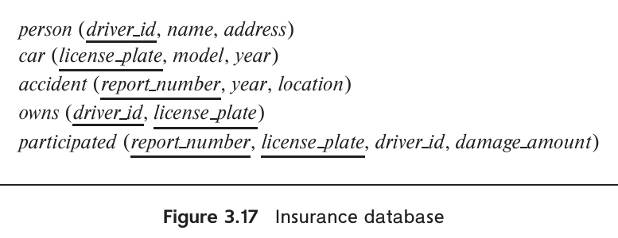
图 3.17 保险数据库。
图中字段：person：人员；car：汽车；accident：事故；owns：拥有；participated：事故参与记录。driver_id：驾驶员号；name：姓名；address：地址；license_plate：车牌号；model：车型；year：年份；report_number：报告号；location：地点；damage_amount：损失金额。下划线标明主键。
3.5 假设有关系 marks(ID, score)，希望按分数为学生划分等级：score < 40 为 F，40 ≤ score < 60 为 C，60 ≤ score < 80 为 B，80 ≤ score 为 A。用 SQL 完成以下查询。
a. 根据 marks 显示每位学生的等级。
b. 找出每个等级的学生人数。
3.6 多数系统中的 SQL like 运算区分大小写，但可以利用字符串函数 lower() 进行不区分大小写的匹配。编写一个查询，找出名称包含子串 sci 的所有系，忽略大小写。
3.7 考虑 SQL 查询：
select p.a1
from p, r1, r2
where p.a1 = r1.a1 or p.a1 = r2.a1
在什么条件下，该查询能选出存在于 r1 或 r2 中的所有 p.a1 值？仔细考虑 r1 或 r2 可能为空的情况。
3.8 考虑图 3.18 的银行数据库，带下划线的属性为主键。用 SQL 编写以下查询。
a. 找出在该银行有账户但没有贷款的每位客户的 ID。
b. 找出与客户 '12345' 居住在同一城市、同一街道的每位客户的 ID。
c. 找出每个满足以下条件的支行名称：至少有一位在该支行开户的客户居住在 Harrison。
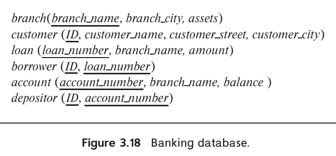
图 3.18 银行数据库。
图中字段：branch：支行；customer：客户；loan：贷款；borrower：借款人；account：账户；depositor：存款人。branch_name：支行名；branch_city：支行城市；assets：资产；ID：客户号；customer_name：客户姓名；customer_street：客户街道；customer_city：客户城市；loan_number：贷款号；amount：金额；account_number：账户号；balance：余额。下划线标明主键。
3.9 考虑图 3.19 的关系数据库，带下划线的属性为主键。为以下查询编写 SQL 表达式。
a. 找出在 First Bank Corporation 工作的每位员工的 ID、姓名和居住城市。
b. 找出在 First Bank Corporation 工作且工资超过 10000 美元的每位员工的 ID、姓名和居住城市。
c. 找出每位不在 First Bank Corporation 工作的员工的 ID。
d. 找出工资高于 Small Bank Corporation 所有员工的每位员工的 ID。
e. 假设一家公司可能位于多个城市。找出在 Small Bank Corporation 所在的每个城市都设有机构的公司名称。
f. 找出员工人数最多的公司名称；若并列最多，列出所有这些公司。
g. 找出员工平均工资高于 First Bank Corporation 平均工资的每家公司名称。
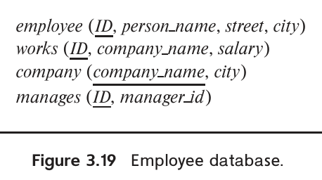
图 3.19 员工数据库。
图中字段：employee：员工；works：工作关系；company：公司；manages：管理关系。ID：员工号；person_name：姓名；street：街道；city：城市；company_name：公司名；salary：工资；manager_id：经理号。下划线标明主键。
3.10 考虑图 3.19 的关系数据库，为下列操作编写 SQL 表达式。
a. 修改数据库，将 ID 为 '12345' 的员工的居住城市改为 Newtown。
b. 给 First Bank Corporation 的每位经理加薪 10%；若加薪后工资会超过 100000 美元，则只加薪 3%。
习题
3.11 使用大学数据库模式，用 SQL 编写以下查询。
a. 找出至少选修过一门计算机科学系课程的每位学生的 ID 和姓名，确保结果中没有重复姓名。
b. 找出没有选修过任何 2017 年以前开设的课程的每位学生的 ID 和姓名。
c. 找出每个系教师工资的最高值，可以假设每个系至少有一位教师。
d. 在上一问得到的各系最高工资中找出最低值。
3.12 使用大学数据库模式，编写 SQL 语句执行以下操作。
a. 创建新课程 CS-001，名称为 Weekly Seminar，学分为 0。
b. 为该课程在 2017 年秋季创建一个 sec_id 为 1 的教学班，授课地点暂未指定。
c. 将计算机科学系的每位学生加入上述教学班。
d. 删除 ID 为 12345 的学生对上述教学班的选课记录。
e. 删除课程 CS-001。如果没有先删除该课程的开课记录（教学班），就执行该删除语句，会发生什么？
f. 删除课程名称包含 advanced 一词的全部教学班对应的 takes 元组，匹配课程名称时忽略大小写。
3.13 为图 3.17 的模式编写 SQL DDL。对数据类型作合理假设，并务必声明主键和外键。
3.14 考虑图 3.17 的保险数据库，带下划线的属性为主键。用 SQL 编写以下查询。
a. 找出涉及名为 John Smith 的人所拥有汽车的事故次数。
b. 将事故报告号为 AR2197 的事故中，车牌号为 AABB2000 的汽车的损失金额更新为 3000 美元。
3.15 考虑图 3.18 的银行数据库，带下划线的属性为主键。用 SQL 编写以下查询。
a. 找出在 Brooklyn 的每个支行都开有账户的客户。
b. 找出该银行全部贷款金额的总和。
c. 找出资产额高于 Brooklyn 至少一个支行资产额的全部支行名称。
3.16 考虑图 3.19 的员工数据库，带下划线的属性为主键。为下列查询编写 SQL 表达式。
a. 找出居住城市与所工作公司所在城市相同的每位员工的 ID 和姓名。
b. 找出与自己的经理居住在同一城市、同一街道的每位员工的 ID 和姓名。
c. 找出工资高于所在公司全体员工平均工资的每位员工的 ID 和姓名。
d. 找出工资总额最小的公司。
3.17 考虑图 3.19 的员工数据库，为下列操作编写 SQL 表达式。
a. 给 First Bank Corporation 的所有员工加薪 10%。
b. 给 First Bank Corporation 的所有经理加薪 10%。
c. 删除 works 中 Small Bank Corporation 所有员工的元组。
3.18 为图 3.19 的员工数据库编写 SQL 模式定义。为每个属性选择适当的域，为每个关系模式选择适当的主键，并加入适当的外键约束。
3.19 列出数据库中可能引入空值的两个原因。
3.20 证明 SQL 中的 <> all 等价于 not in。
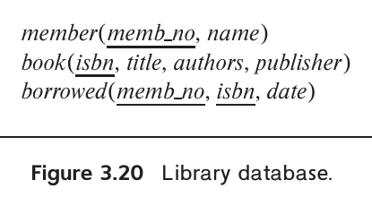
图 3.20 图书馆数据库。
图中字段：member：会员；book：图书；borrowed：借阅记录。memb_no：会员号；name：姓名；isbn：国际标准书号；title：书名；authors：作者；publisher：出版社；date：日期。下划线标明主键。
3.21 考虑图 3.20 的图书馆数据库，用 SQL 编写以下查询。
a. 找出至少借阅过一本 McGraw-Hill 出版的图书的每位会员的会员号和姓名。
b. 找出借阅过 McGraw-Hill 出版的每一本图书的每位会员的会员号和姓名。
c. 对每个出版社，找出借阅过该社五本以上图书的每位会员的会员号和姓名。
d. 找出每位会员的平均借书数。注意：未借过书的会员完全不会出现在 borrowed 中，但计算平均值时仍须计入这些会员。
3.22 改写下面的 where 子句，不使用 unique。
where unique (select title from course)
3.23 考虑查询：
with dept_total (dept_name, value) as
(select dept_name, sum(salary)
from instructor
group by dept_name),
dept_total_avg(value) as
(select avg(value)
from dept_total)
select dept_name
from dept_total, dept_total_avg
where dept_total.value >= dept_total_avg.value;
不使用 with，改写该查询。
3.24 使用大学数据库模式，用 SQL 找出由物理系教师指导的会计系学生的姓名和 ID。
3.25 使用大学数据库模式，用 SQL 找出预算高于哲学系的各系名称，按字母顺序排列。
3.26 使用大学数据库模式，用 SQL 完成以下查询：对于至少重修过某门课程两次（即总共选修过该课程至少三次）的学生，显示课程 ID 和学生 ID。结果按课程 ID 排序，不显示重复行。
3.27 使用大学数据库模式，用 SQL 找出至少有三门不同课程各重修过至少一次（即每门课程至少选修过两次）的学生 ID。
3.28 使用大学数据库模式，用 SQL 找出教授过所在系全部课程的教师的姓名和 ID，即 course 中系名与该教师系名相同的每门课程都教授过。结果按姓名排序。
3.29 使用大学数据库模式，用 SQL 找出姓名以字母 D 开头、且选修的音乐系课程不足五门的每位历史系学生的姓名和 ID。
3.30 考虑大学数据库模式上的 SQL 查询：
select avg(salary) - (sum(salary) / count(*))
from instructor
一组数的平均值定义为数值总和除以个数，因此可能预期该查询返回 0。对图 2.1 的 instructor 示例关系，结果确实如此。但是，这个关系还可能有其他实例，使结果不为 0。给出一个这样的实例，并解释结果为何不为 0。
3.31 使用大学数据库模式，用 SQL 找出在自己教过的任何课程中都从未给过 A 成绩的每位教师的 ID 和姓名。（从未教过课的教师自然满足这个条件。）
3.32 改写上一题的查询，进一步确保只包括在某门课程中至少给过一次其他非空成绩的教师。
3.33 使用大学数据库模式，用 SQL 找出计算机科学系中至少有一个教学班的授课时间涉及下午（即结束时间在 12:00 或之后）的每门课程的 ID 和名称。消除可能出现的重复结果。
3.34 使用大学数据库模式，用 SQL 找出每个教学班的学生人数。结果列按 courseid, secid, year, semester, num 的顺序出现，无须输出学生人数为 0 的教学班。
3.35 使用大学数据库模式，用 SQL 找出选课人数最多的教学班。结果列按 courseid, secid, year, semester, num 的顺序出现。（使用 with 可能更方便。）
工具
商业关系数据库系统包括 IBM DB2、IBM Informix、Oracle、SAP Adaptive Server Enterprise（原名 Sybase）和 Microsoft SQL Server。此外，还可以免费下载和使用若干开源数据库系统，包括 PostgreSQL 和 MySQL（除某些商业用途外免费）。部分商业厂商也提供带有一定使用限制的免费版本，例如 Oracle Express Edition、Microsoft SQL Server Express 和 IBM DB2 Express-C。
sql.js 是嵌入式 SQL 数据库 SQLite 的一个版本，可以直接在浏览器中运行和执行 SQL 命令。全部数据都是临时的，关闭浏览器就会消失，但它仍可用于学习 SQL。需要留意，sql.js 和 SQLite 支持的 SQL 子集比其他数据库小得多。www.w3schools.com/sql 提供了以 sql.js 为执行引擎的 SQL 教程。
本书网站 db-book.com 提供大量配套资料。通过网站的 Laboratory Material（实验资料）链接，可以获得：
- 设置和访问常见数据库系统的说明，包括可在浏览器中运行的 sql.js，以及 MySQL、PostgreSQL。
- 大学数据库模式的 SQL 定义。
- 装载示例数据集的 SQL 脚本。
- 使用印度理工学院孟买分校开发的 XData 系统的提示：在系统生成的多个数据集上执行查询，检验查询是否正确；也为教师提供用 XData 自动评判 SQL 查询的说明。
- 不同数据库之间 SQL 差异的使用提示。
不同数据库对 SQL 特性的支持不同，多数数据库还支持一些非标准扩展。请阅读系统手册，了解所用数据库支持哪些具体特性。
多数数据库系统提供用于提交 SQL 命令的命令行接口，也提供图形用户界面（GUI），以简化数据库浏览、查询的编写与提交，以及数据库管理。PostgreSQL 可使用 pgAdmin，MySQL 可使用 phpMyAdmin；Oracle 提供 Oracle SQL Developer，Microsoft SQL Server 则附带 SQL Server Management Studio。
NetBeans IDE 的 SQLEditor 提供可连接多种数据库系统的 GUI 前端，但功能有限。Eclipse IDE 通过 Data Tools Platform（DTP）提供类似功能。支持跨多种数据库平台访问 SQL 的商业 IDE 包括 Embarcadero 的 RAD Studio 和 Aqua Data Studio。
进一步阅读
SQL 的前身 Sequel 语言见 [Chamberlin et al. (1976)]。
最重要的 SQL 参考资料通常是所用数据库系统或其厂商提供的在线文档。这些文档会指出哪些特性偏离了本章介绍的 SQL 标准。下面列出一些常见数据库截至 2018 年的版本所对应的 SQL 参考手册：
- MySQL 8.0：dev.mysql.com/doc/refman/8.0/en/
- Oracle 12c：docs.oracle.com/database/121/SQLRF/
- PostgreSQL：www.postgresql.org/docs/current/static/sql.html
- SQLite：www.sqlite.org/lang.html
- SQL Server：docs.microsoft.com/en-us/sql/t-sql
参考文献
[Chamberlin et al. (1976)] D. D. Chamberlin, M. M. Astrahan, K. P. Eswaran, P. P. Griffiths, R. A. Lorie, J. W. Mehl, P. Reisner, and B. W. Wade, “SEQUEL 2: A Unified Approach to Data Definition, Manipulation, and Control”, IBM Journal of Research and Development, Volume 20, Number 6 (1976), pages 560–575。
图片来源
章首帆船照片：©Pavel Nesvadba/Shutterstock。
-
模式中声明了主键的数据库关系不能包含重复元组，因为重复会违反主键约束。 ↩
-
实际执行时，SQL 可以把表达式转换为更高效的等价形式。效率问题留到第15章和第16章讨论。 ↩
-
早期 SQL 没有
as，因此某些实现，特别是 Oracle，不允许在from中使用它。在 Oracle 的from中，应把old-name as new-name写为old-name new-name；select中重命名属性可以使用as，也可以省略。 ↩ -
MySQL 以及 PostgreSQL 的
ilike运算符例外，它们进行不区分大小写的模式匹配。 ↩ -
这一语法属于 SQL-92 标准，但某些 SQL 实现，特别是 Oracle，不支持它。 ↩
-
MySQL 没有实现
intersect；可以用3.8.1节介绍的子查询绕过这一限制。 ↩ -
某些实现，特别是 Oracle，用
minus代替except；Oracle 12c 用multiset except代替except all。MySQL 完全没有实现这一运算，可以用3.8.1节的子查询绕过。 ↩ -
一些数据库不支持
is unknown和is not unknown。 ↩ -
大多数 SQL 实现还提供许多其他聚集函数。 ↩
-
SQL 中的关键字
any与some同义。早期版本只允许any，后续版本加入some这个替代写法，以避免英语单词 any 的歧义。 ↩ -
这个结构尚未得到广泛实现。 ↩
-
SQL 求值引擎未必会实际创建这个关系。只要最终查询结果与创建该关系时相同，就可以采用其他方式计算整个查询。 ↩
-
例如，这种结构在 SQL Server 中合法，在 Oracle 中不合法。 ↩